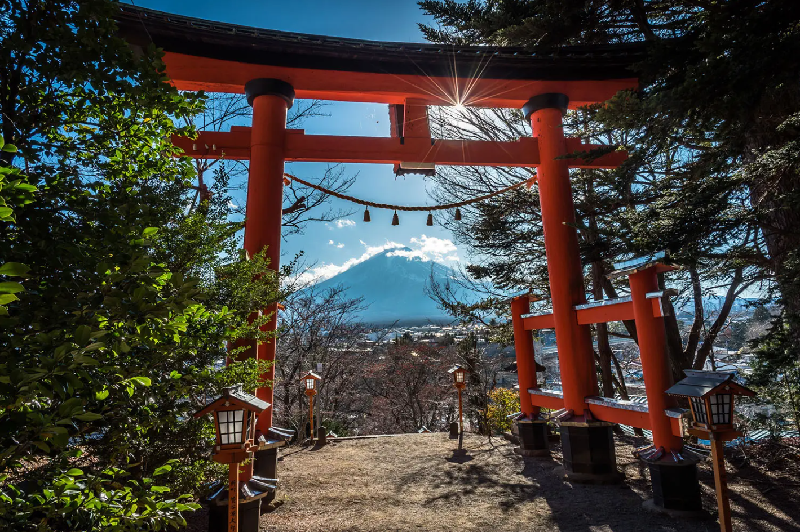
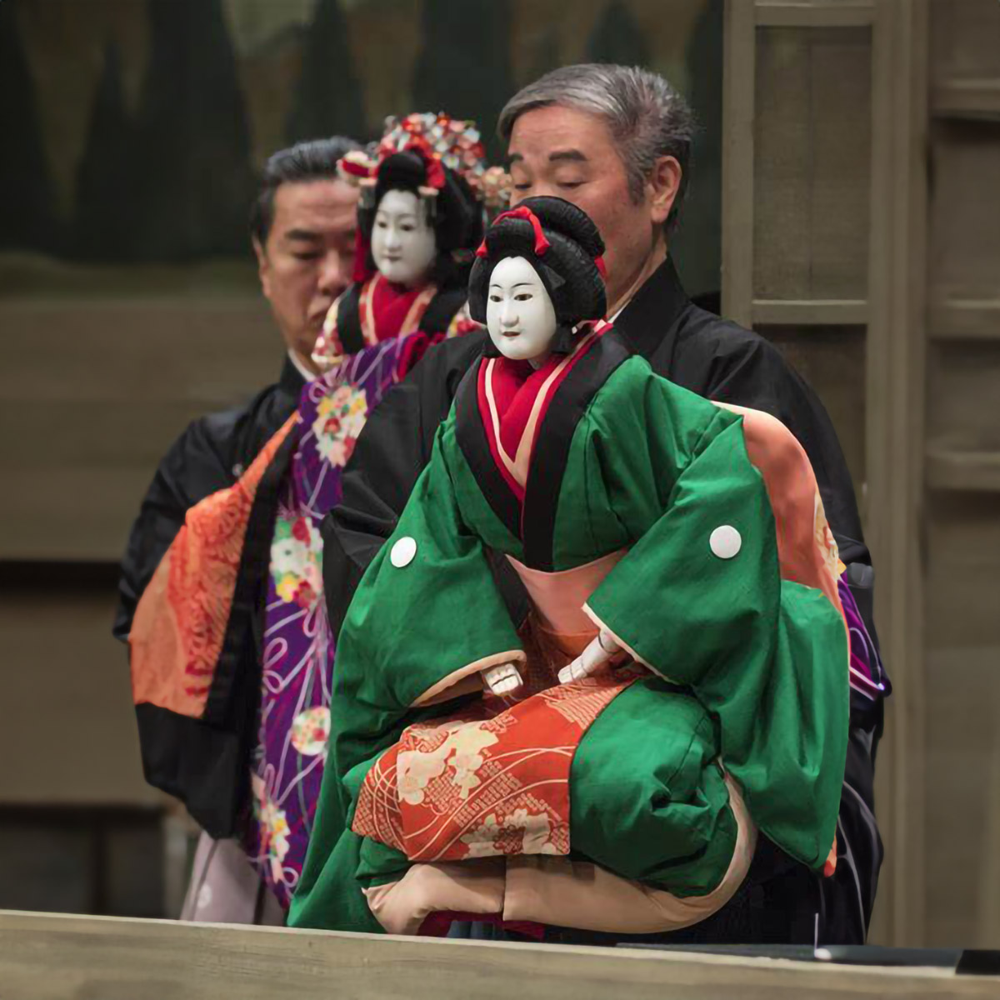

Descubre la Esencia de Japón
Bienvenido a un espacio donde tradición y modernidad se encuentran. La cultura japonesa es un universo fascinante de contrastes: desde la serenidad del ikebana y la ceremonia del té, hasta la energía vibrante del anime, la tecnología de punta y el bullicio de Tokio. Aquí exploramos sus costumbres milenarias, su arte, gastronomía, filosofía y la influencia global que ha ejercido sobre generaciones enteras. Acompáñanos en este viaje por el corazón de Japón, donde cada detalle esconde una historia y cada símbolo, una lección de armonía y respeto.
Shintoísmo y espiritualidad japonesa
La armonía con la naturaleza y los espíritus: el corazón del shintoísmo japonés
El shintoísmo, como religión autóctona de Japón, no se basa en dogmas estrictos ni en textos sagrados, sino en la veneración de los kami (espíritus o dioses) que habitan en la naturaleza y en los objetos sagrados. Este sistema de creencias refleja una profunda conexión entre los seres humanos y el mundo natural, donde los elementos como los árboles, las montañas, los ríos y los animales son vistos como portadores de un poder divino. En este contexto, la espiritualidad japonesa no está centrada en la adoración de una deidad única, sino en la relación armoniosa con el entorno natural y los ancestros.

Teatro japonés (Nō, Kabuki y Bunraku)
El teatro tradicional japonés: un arte escénico que transmite historia, emoción y espiritualidad
El teatro japonés, con sus formas tradicionales como el Nō, el Kabuki y el Bunraku, ofrece una rica expresión cultural que va más allá del simple entretenimiento, siendo una manifestación de la tradición y la filosofía de la sociedad japonesa. El teatro Nō, con sus máscaras y movimientos ceremoniales, expresa temas de vida, muerte, amor y sufrimiento a través de una representación estilizada y meditativa. El Kabuki, por su parte, es una forma más vibrante y accesible de teatro, donde los actores interpretan historias dramáticas, a menudo con elementos cómicos o fantásticos, combinando danza, música y vestuario extravagante para crear una experiencia emocionalmente intensa.
El Bunraku, o teatro de marionetas, se destaca por su complejidad técnica y emocional, donde marionetistas expertos dan vida a las figuras, en un estilo único que muestra la lucha interna de los personajes. A través de estas formas teatrales, Japón ha logrado preservar su historia, valores y emociones colectivas, transmitiéndolos de generación en generación mediante una combinación de arte visual, música y movimiento.
